全文翻译
摘要
扩散 Transformer（Diffusion Transformers）的应用正受限于其高昂的推理成本。近期，特征缓存（feature caching）技术被提出以解决这一问题，该技术通过复用前一时间步的特征，省去未来时间步的计算过程。然而，以往的特征缓存技术假设相邻时间步的特征具有相似性或连续性，这一假设并非在所有场景下都成立。为探究此问题，本文从频域视角展开分析，结果表明：扩散模型特征中的不同频段在时间步间呈现出截然不同的动态变化规律。具体而言，决定图像结构的低频成分相似性较高，但连续性较差；与之相反，承载图像细节信息的高频成分连续性显著，但相似性较低。这些有趣的发现促使我们提出一种 “频率感知缓存（FreqCa）” 方法。该方法基于低频成分的相似性直接复用其特征，同时利用高频成分的连续性，通过二阶埃尔米特插值器（Hermite interpolator）对易变的高频成分进行预测。此外，本文进一步提出缓存 “累积残差特征（Cumulative Residual Feature, CRF）”，而非所有层的特征，此举将特征缓存的内存占用降低了 99%。在 FLUX.1-dev、FLUX.1-Kontext-dev、Qwen-Image 和 Qwen-Image-Edit 等模型上开展的大量实验表明，该方法在图像生成与编辑任务中均具有良好效果。相关代码已收录于补充材料，并将在 GitHub 上发布
引言
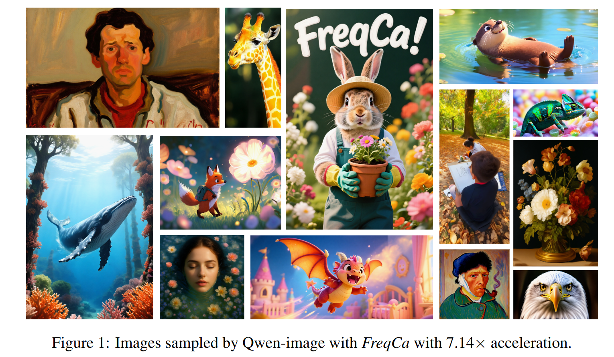 |
|---|
| 图1：Qwen-Image模型结合FreqCa方法采样得到的图像，加速比达7.14倍。 |
扩散模型（Diffusion Models, DMs）在图像合成、视频生成等生成式任务中取得了显著成功（Ho et al., 2020a; Rombach et al., 2022; Blattmann et al., 2023）。近期提出的扩散Transformer（Diffusion Transformers）（Peebles & Xie, 2023a）进一步提升了生成质量与多样性，成为大规模视觉内容创作的主流架构。然而，扩散Transformer通常依赖大量Transformer块堆叠与多步采样过程，计算效率成为其实际部署的关键瓶颈。为解决这一问题，特征缓存范式应运而生，该范式利用相邻时间步间的高时间冗余性实现加速（Ma et al., 2024; Li et al., 2023a; Selvaraju et al., 2024; Chen et al., 2024; Zou et al., 2025; 2024）。
缓存范式的争议： 特征缓存已逐渐发展出两种不同范式。“先缓存再复用（Cache-Then-Reuse）”范式假设扩散模型相邻时间步的特征高度相似，因此提出将前一时间步的特征直接复用于未来时间步（Selvaraju et al., 2024）；与之相对，“先缓存再预测（Cache-Then-Forecast）”范式则认为扩散模型特征具有“连续性”，进而提出利用泰勒展开等非参数预测器，基于前一时间步特征预测未来时间步特征。尽管“先缓存再预测”范式在近期研究中往往表现更优，但其对连续性的假设并非始终完全成立。例如，Liu等人的研究表明，FLUX模型的特征并不具备高阶连续性，这导致TaylorSeer方法退化为线性预测方式，进而产生质量损失（Liu et al., 2025a）。基于这些发现，本文首先对扩散模型的时间动态特性展开深入分析。
频域视角的分析： 在经典图像处理中，图像的高频与低频成分通常被认为承载着不同的语义信息，这一特点促使我们分别研究扩散模型特征中高频与低频成分的动态变化规律。如文中图2(a)-(b)所示，我们意外发现不同频段呈现出显著不同的动态特性：具体而言，低频成分在大多数时间步的相似性均高于0.90，而高频成分的相似性则明显较低；另一方面，如图2(c)-(d)所示，高频成分的特征轨迹展现出极佳的稳定性与连续性，而低频成分的特征轨迹则不稳定且伴随突变现象。这表明高频信息可被精准预测，而低频信息则难以预测。
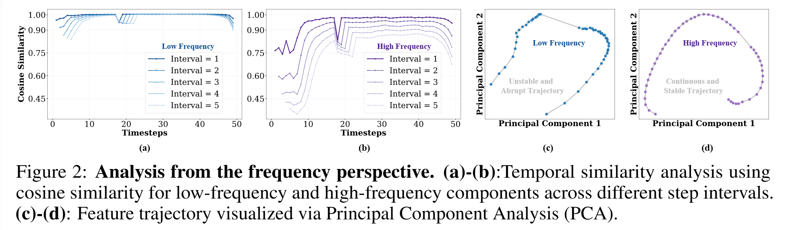 |
|---|
| 图2：频域视角的分析结果。(a)-(b)：采用余弦相似度分析不同步长间隔下低频与高频成分的时间相似性；(c)-(d)：通过主成分分析(Principal Component Analysis, PCA)可视化特征轨迹。 |
基于上述发现，本文提出“频率感知特征缓存（Frequency-aware Feature Caching, FreqCa）”方法，旨在对扩散模型特征的频率成分进行解耦，并采用不同范式分别处理。具体而言，FreqCa首先对需缓存的特征进行频率分解（如傅里叶变换等）；对于低频段，鉴于其高相似性，直接将其复用于未来时间步；对于高频段，凭借其良好的连续性，采用埃尔米特多项式预测器（Hermite polynomial predictor）等序列预测器对未来时间步的特征值进行预测。 随后，在未来时间步中，FreqCa通过复用的低频段与预测的高频段重构特征，从而省去扩散Transformer的计算过程，实现两种传统缓存范式的优势融合。
内存高效的特征缓存：以往的缓存方法通常会缓存注意力层与前馈网络（FFN）层的全部特征，这导致内存开销显著（例如，在FLUX模型上采用ToCa方法时，内存开销≥10GB），使得特征缓存方法难以应用于实际场景。正如Veit等人（2016）所指出的，具有残差连接的神经网络可被视为所有块特征的集合，这一观点促使我们提出缓存“累积残差特征（Cumulative Residual Feature, CRF）”——即所有来自注意力块与FFN块的残差连接的累积特征 。这一策略将原本需缓存的2×L个特征（L表示层数）减少为单个特征向量，使缓存内存占用量降低高达99%；此外，该策略还将频率（逆）分解操作的次数减少2L倍，使其在整个扩散过程中的延迟开销占比仅≤0.01%。
综上，本文的贡献如下：
- 频率感知特征缓存（Frequency-Aware Feature Caching）：受不同频段在相似性与连续性上存在差异这一发现的启发，我们提出了 FreqCa 方法。该方法针对不同频率采用不同的特征缓存策略，实现了对以往两种缓存范式的融合统一。
- 内存高效的特征缓存：通过仅缓存累积残差特征（Cumulative Residual Feature, CRF），FreqCa 实现了 O (1) 的内存复杂度，在无保真度损失的前提下，将缓存内存占用量大幅降至以往方法的 1%，从而能够在消费级硬件上实现高质量加速。
- 顶尖的泛化能力与性能：在文本生成图像及图像编辑任务中，FreqCa 始终能实现 6-7 倍的加速，同时质量损失低于2%，其性能优于现有方法，并展现出极强的鲁棒性与实用性。
2 相关工作
扩散模型已成为现代生成式人工智能的核心技术之一，在视觉内容合成领域展现出顶尖性能（Sohl-Dickstein et al., 2015; Ho et al., 2020b）。早期扩散模型多基于U-Net架构构建（Ronneberger et al., 2015），但其可扩展性局限为扩散Transformer（Diffusion Transformer, DiT）的发展奠定了基础（Peebles & Xie, 2023b）。此后，DiT架构逐渐成为核心基础，推动了各类领域中高性能模型的涌现（Zheng et al., 2024; Yang et al., 2025）。然而，扩散采样过程的迭代特性给推理阶段带来了巨大的计算负担，因此加速技术成为该领域的关键研究方向（Ho et al., 2020b; Peebles & Xie, 2023b）。目前，提升扩散模型效率的研究主要集中在两个互补方向：减少采样步数，以及加速去噪网络本身。
2.1 采样步数减少
该方向的核心策略是在保证生成质量的前提下，尽可能减少所需的采样迭代次数。具有开创性的DDIM（Denoising Diffusion Implicit Models）方法引入了确定性采样机制，在无显著保真度损失的情况下减少了采样步数（Song et al., 2021）。这一思路在DPM-Solver系列方法中得到进一步优化——该系列方法采用高阶常微分方程（ODE）求解器，实现了更快的收敛速度（Lu et al., 2022a; 2022b; Zheng et al., 2023）。其他代表性方法包括知识蒸馏（knowledge distillation）：通过训练一个“学生模型”来模拟大型“教师模型”的多步去噪过程（Salimans & Ho, 2022; Meng et al., 2022）；以及Rectified Flow（整流流）：通过学习“噪声分布”与“数据分布”之间的生成路径拉直方法，简化采样过程（Liu et al., 2023b）。近年来，一致性模型（Consistency Models）实现了突破性进展，其能够直接将噪声映射为清晰数据，无需序列式采样路径，从而实现单步高质量合成（Song et al., 2023）。
2.2 去噪网络加速
与减少采样步数不同，该方向旨在降低去噪网络单次前向传播的计算成本，主要通过模型压缩或特征缓存两种方式实现。
基于模型压缩的加速： 模型压缩是该方向的重要研究分支，涵盖网络剪枝（network pruning）（Fang et al., 2023; Zhu et al., 2024）、量化（quantization）（Li et al., 2023b; Shang et al., 2023; Kim et al., 2025），以及各类令牌缩减（token reduction）技术——这类技术通过动态缩短输入序列长度降低计算量（Bolya & Hoffman, 2023; Kim et al., 2024; Zhang et al., 2024; 2025）。尽管这些方法具有一定效果，但模型简化往往会导致表达能力下降，因此通常需要微调或重训练阶段来缓解这一问题（Li et al., 2024; 2023b）。
基于特征缓存的加速： 特征缓存是一种无需训练的高效替代方案，其核心是利用去噪过程中的时间冗余性。该范式最初在U-Net架构中通过FasterDiffusion和DeepCache方法提出，随后被适配到DiT架构中。早期研究聚焦于“先缓存再复用（cache then reuse）”策略，而FORA和Δ-DiT等进阶方法对该策略进行了优化。随着研究深入，更复杂的机制不断涌现，包括动态令牌级更新（ToCa）、自适应采样（RAS（Liu et al., 2025c）），以及显式误差校正框架（Qiu et al., 2025; Chen et al., 2025; Chu et al., 2025）。该领域的一个关键突破是TaylorSeer提出的“先缓存再预测（cache then forecast）”范式，后续FoCa（Zheng et al., 2025）、HiCache（Feng et al., 2025）和SpeCa（Liu et al., 2025b）等方法通过更稳健的数值方法进一步完善了这一范式。
然而，正如初步频域分析所暗示的，这些复杂范式存在一个关键缺陷。例如，PAB（Zhao et al., 2024）方法虽敏锐地将不同注意力机制与特定频段关联起来，但并未深入研究令牌级别的频率动态特性；类似地，FasterCache（Lv et al., 2025）虽在“无分类器引导（Classifier-Free Guidance）”场景下分析了频域差异，但其结论局限于该特定场景，未涉及时间维度上特征演化的普遍动态规律，因此实际加速效果有限。
与以往将特征视为整体的方法不同，本文提出的FreqCa方法通过将特征分解为稳定的低频成分与易变的高频成分，并对其采用差异化处理，解决了缓存方法中的质量损失问题。此外，本文还引入了“累积残差特征（Cumulative Residual Feature）”，将内存复杂度从O(L)降至O(1)，从而解决了以往“逐层（layer-wise）”架构中资源效率低下的问题。
3 方法
3.1 预备知识
3.1.1 扩散Transformer架构
扩散Transformer（Diffusion Transformer, DiT）（Peebles & Xie, 2023a）采用分层结构$G = g_1 \circ g_2 \circ \cdots \circ g_L$，其中每个模块$g_l = F_{SA}^l \circ F_{CA}^l \circ F_{MLP}^l$由自注意力（Self-Attention, SA）、交叉注意力（Cross-Attention, CA）和多层感知机（Multilayer Perceptron, MLP）组件构成。在DiT中，这些组件会随时间动态调整，以处理图像生成过程中不同的噪声水平。输入$x_t = \{x_i\}_{i=1}^{H \times W}$被表示为与图像块对应的令牌序列。每个模块通过残差连接整合信息，其形式为$F(x) = x + \text{AdaLN} \circ f(x)$，其中AdaLN表示自适应层归一化（Adaptive Layer Normalization），该操作可稳定训练过程并提升学习效果。
3.1.2 频率分解方法
频率分解通过快速傅里叶变换（Fast Fourier Transform, FFT）、快速傅里叶变换（Discrete Cosine Transform, DCT）等方法实现，是一种将信号解耦为不同成分的强大技术。该过程会将信号分离为低频成分和高频成分：低频成分通常代表全局结构与平滑布局，高频成分则对应细粒度细节与锐利边缘。 在扩散模型的场景下，这种解耦能够区分生成过程中稳定的基础结构与易变的临时细节。
3.2 频率感知缓存加速框架
本节将介绍FreqCa（频率感知特征缓存，Frequency-aware Feature Caching）框架，该框架由三个核心组件构成：（i）对待缓存特征进行频率分解，并对低频成分与高频成分采用不同处理策略；（ii）针对高频部分采用基于非线性埃尔米特多项式（Hermite polynomial）的预测器，以提升预测精度；（iii）将累积残差特征（Cumulative Residual Feature, CRF）确定为一种新型、高效的单张量缓存目标，该特征可涵盖模型的完整变换历史。
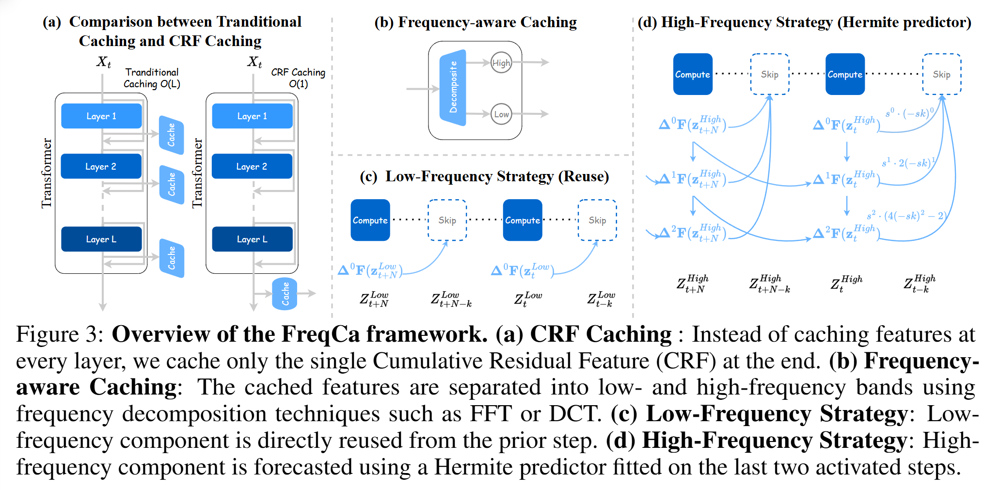 |
|---|
| 图 3：FreqCa 框架概述。（a）累积残差特征（CRF）缓存：无需缓存每一层的特征，仅在流程末尾缓存单一的累积残差特征（CRF）。（b）频率感知缓存：采用快速傅里叶变换（FFT）或离散余弦变换（DCT）等频率分解技术，将缓存的特征分离为低频段和高频段。（c）低频策略：低频成分直接从前一步骤复用。（d）高频策略：高频成分通过埃尔米特预测器（Hermite predictor）进行预测，该预测器基于前两个激活步骤的数据拟合得到。 |
1. 频率分解缓存与预测策略： 我们提出的差异化缓存策略，源于频率成分具有截然不同的时间动态特性：低频成分相似性高但连续性低，表现稳定却难以预测；相反，高频成分相似性低但连续性高，虽具波动性但可沿轨迹预测。这种关键差异表明，“一刀切”的方法并非最优选择，因此需要采用差异化策略。
为实现该策略，我们首先通过通用频率变换$D(\cdot)$将特征$z_t$分解为其组成部分：
式中，$\mathcal{P}_{low/high}$为互补投影算子；低频部分主导全局结构，高频部分则编码细节信息。
基于频率成分的动态特性，我们采用定制化策略：对于稳定的低频成分$z_t^{low}$，采用直接复用策略以维持全局一致性，且几乎无额外成本，即$\widehat{z}_t^{low} = z_{t-1}^{low}$；对于可预测的高频成分$z_t^{high}$，采用基于埃尔米特多项式的非线性预测器，以精准预测其轨迹。在归一化时间$s_t \in [-1,1]$处，每个高频系数$\widehat{h}_i$的建模形式为：$\widehat{h}_i(s_t) = \sum_{k=0}^{m} c_{i,k} \text{He}_k(s_t)$，其中系数$c_{i,k}$通过最近K个缓存步骤的最小二乘回归估计得出，最终可得到精准重构的高频成分$\widehat{z}_t^{high}$。
最后，将两部分成分重组，得到最终的预测特征：$\widehat{z}_t = \widehat{z}_t^{low} + \widehat{z}_t^{high}$。
2. 累积残差特征（CRF）： 扩散Transformer（DiT）的核心是由L个残差块构成的深度堆叠结构。每个块$l$的变换并非替换操作，而是增量更新，其形式符合标准残差连接：$h^{(l+1)} = h^{(l)} + F^{(l)}(h^{(l)}, t)$，其中$F^{(l)}(\cdot, t)$表示第$l$层的变换模块（包含注意力和MLP组件），该模块会通过扩散时间步$t$（如通过AdaLN）进行动态调制。
由此可推导出DiT最终输出的结构：$\phi_L(x_t) = h^{(0)} + \sum_{l=0}^{L-1} F^{(l)}(h^{(l)}, t)$。该公式表明，最终输出并非简单的中间特征，而是初始输入与所有后续残差更新的累积结果。我们将这一特殊输出定义为$z_t \triangleq \phi_L(x_t)$，并将其命名为累积残差特征（Cumulative Residual Feature, CRF），以体现其复合特性。
这一见解催生出更高效的内存策略：传统逐层缓存需存储所有中间特征$\{h^{(l)}\}_{l=0}^{L-1}$，而我们的方法利用CRF已包含完整变换历史这一特性，将该单一全局融合张量作为全量特征集的高效替代方案。如图4所示，仅缓存CRF所实现的重构保真度与完整逐层缓存几乎一致，平均均方误差（MSE）仅高4\%，这表明CRF可作为对整个计算路径的近无损压缩。因此，CRF成为理想的轻量级缓存目标，能够在不显著损失质量的前提下，将内存复杂度从$O(L)$革命性地降至$O(1)$。
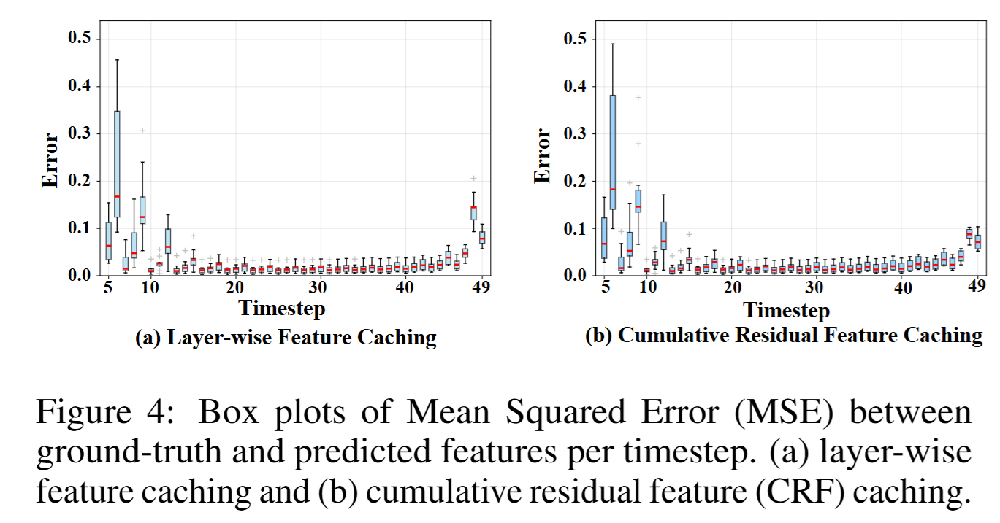 |
|---|
| 图 4：各时间步下真实特征（ground-truth）与预测特征之间均方误差（MSE，Mean Squared Error）的箱线图。（a）逐层特征缓存（layer-wise feature caching）；（b）累积残差特征（CRF，Cumulative Residual Feature）缓存。 |
4 实验
4.1 实验设置
模型配置
实验在五个当前主流的视觉生成模型上开展，分别为FLUX.1-dev（Labs, 2024）、Qwen-Image（Liu et al., 2023a）、FLUX.1-Kontext-dev（Zhang & Agrawala, 2025）以及Qwen-Image-Edit（Salimans & Ho, 2022）。
评估与指标
在文本生成图像任务的评估中，我们采用DrawBench基准测试集（Saharia et al., 2022）。生成样本通过ImageReward（Xu et al., 2023）和CLIP Score（Hessel et al., 2021）进行系统性评估，这两个指标可共同衡量图像质量与文本-图像语义对齐程度。为评估视觉保真度，我们进一步采用峰值信噪比（PSNR）、结构相似性指数（SSIM）（Wang et al., 2004）和感知相似度指标（LPIPS）（Zhang et al., 2018），以同时捕捉像素级相似性与感知一致性。此外，我们利用GEdit基准测试集（Wang et al., 2024）评估通用图像编辑任务，该基准可在文本和视觉指导下，系统性评估指令驱动的编辑保真度及与目标修改的对齐程度。
4.2 文本生成图像
4.2.1 FLUX.1-dev
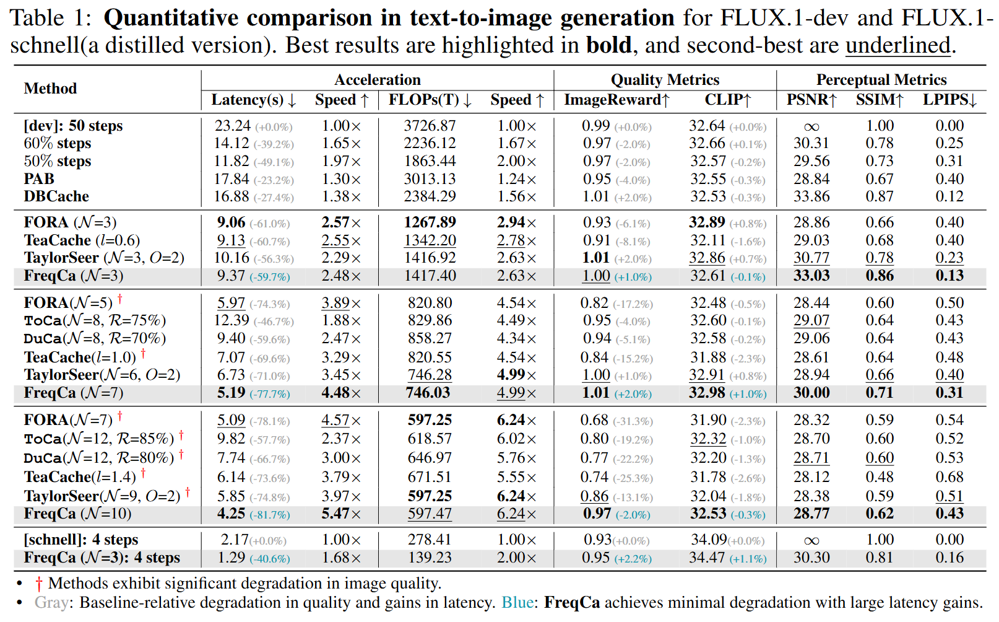 |
|---|
| 表1：FLUX.1-dev与FLUX.1-schnell（其蒸馏版本）在文本生成图像任务中的定量对比。最佳结果以粗体标注，次佳结果以下划线标注。 |
注：† 表示该方法存在显著的图像质量下降。灰色标注：相较于基准方法，质量下降且延迟降低；蓝色标注：FreqCa在大幅降低延迟的同时，实现了最小化的质量下降。
在FLUX.1-dev模型上，FreqCa在不同加速比下均持续优于当前主流加速方法。当加速比为2.63倍时，FreqCa的ImageReward得分为1.00，显著优于FORA与TeaCache；当加速比达到4.99倍时，仍能保持无损质量。即便在6.24倍加速比下，FreqCa的ImageReward得分仅下降2%（降至0.97），而TaylorSeer的质量下降幅度则达13.1%。在蒸馏版本FLUX.1-schnell上，FreqCa实现2.00倍加速的同时，还将ImageReward得分从0.93提升至0.95。
4.2.2 Qwen-Image
在Qwen-Image模型上，FreqCa在不同加速比下均展现出优越性能。当加速比为5.00倍时，FreqCa的ImageReward得分为1.20，优于TaylorSeer（1.01）；当加速比提升至7.14倍时，FreqCa的ImageReward得分仅下降18.4%（降至1.02），而TaylorSeer的质量损失则达41.6%（降至0.73）。在蒸馏版本Qwen-Image-Lightning上，FreqCa实现4.00倍加速的同时，仅产生极小的质量下降。
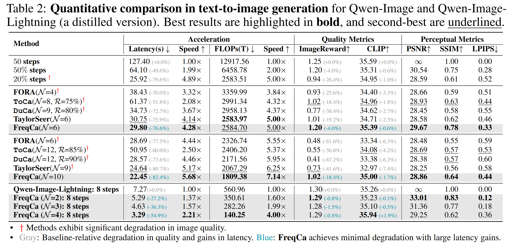 |
|---|
| 表2：Qwen-Image与Qwen-Image-Lightning（其蒸馏版本）在文本生成图像任务中的定量对比。最佳结果以粗体标注，次佳结果以下划线标注 |
注：† 表示该方法存在显著的图像质量下降。灰色标注：相较于基准方法，质量下降且延迟降低；蓝色标注：FreqCa在大幅降低延迟的同时，实现了最小化的质量下降。
4.3 图像编辑
4.3.1 FLUX.1-Kontext-dev
在FLUX.1-Kontext-dev模型上，FreqCa的性能优于其他加速方法。当加速比为5.00倍时，FreqCa的Q_O（总体得分）为6.195，高于ToCa（6.125）；当加速比达到6.24倍时，FreqCa的Q_O得分仅下降0.4%，展现出更优的感知保真度。
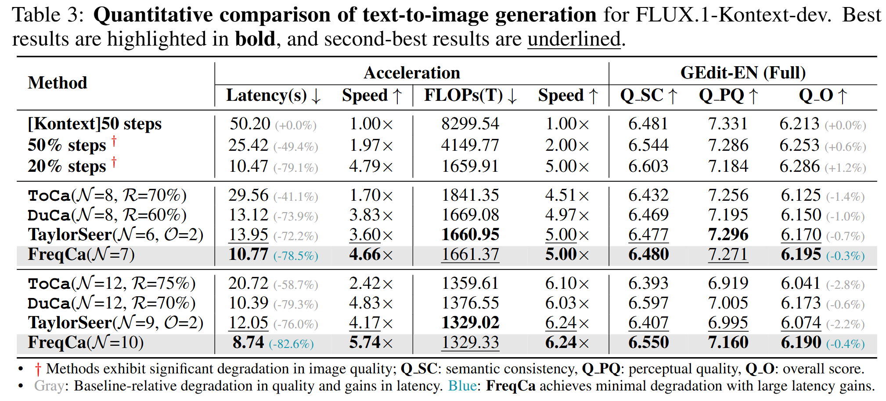 |
|---|
| 表3：FLUX.1-Kontext-dev在文本生成图像任务中的定量对比。最佳结果以粗体标注，次佳结果以下划线标注。 |
注：† 表示该方法存在显著的图像质量下降；Q_SC：语义一致性，Q_PQ：感知质量，Q_O：总体得分。灰色标注：相较于基准方法，质量下降且延迟降低；蓝色标注：FreqCa在大幅降低延迟的同时，实现了最小化的质量下降。
4.3.2 Qwen-Image-Edit
在Qwen-Image-Edit模型上，FreqCa在双语编辑任务中展现出优越性能。当加速比为5.00倍时，FreqCa在GEdit-CN（中文GEdit基准）和GEdit-EN（英文GEdit基准）上的Q_O得分分别为7.49和7.52，优于TaylorSeer（分别为6.92和6.89）；当加速比达到6.24倍时，FreqCa的质量下降幅度仅为1.9%和4.3%，而TaylorSeer的质量下降幅度则达14.8%和16.3%。
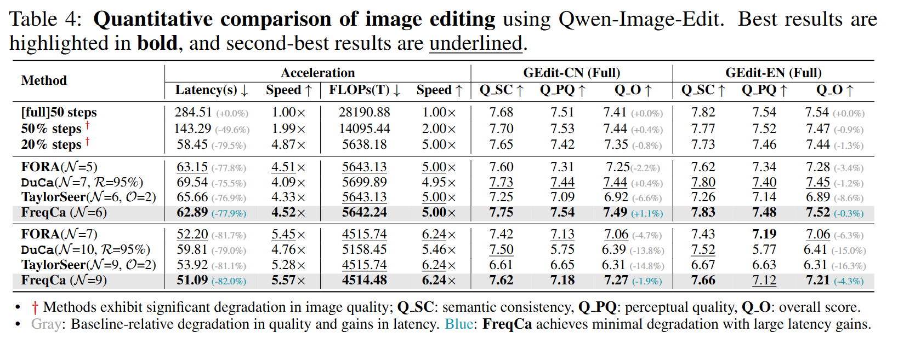 |
|---|
| 表4：Qwen-Image-Edit在图像编辑任务中的定量对比。最佳结果以粗体标注，次佳结果以下划线标注。 |
注：† 表示该方法存在显著的图像质量下降；Q_SC：语义一致性，Q_PQ：感知质量，Q_O：总体得分。灰色标注：相较于基准方法，质量下降且延迟降低；蓝色标注：FreqCa在大幅降低延迟的同时，实现了最小化的质量下降。
如图5和图6所示，定性评估结果证实了FreqCa在视觉质量保留方面的优越性。FORA（6.24倍）、DuCa（5.46倍）和TaylorSeer（6.24倍）均出现明显的伪影，而FreqCa（6.24倍）则保持了与原始模型相近的稳定视觉质量。
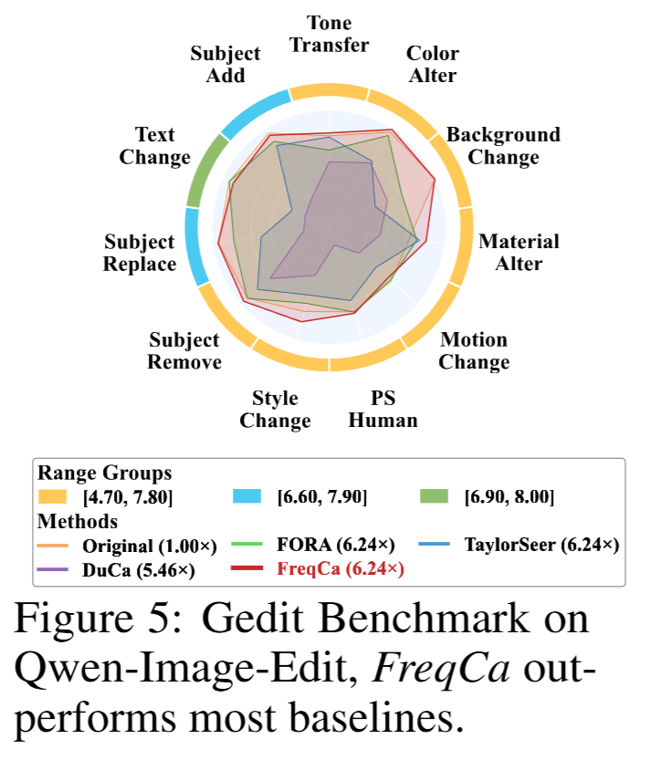 |
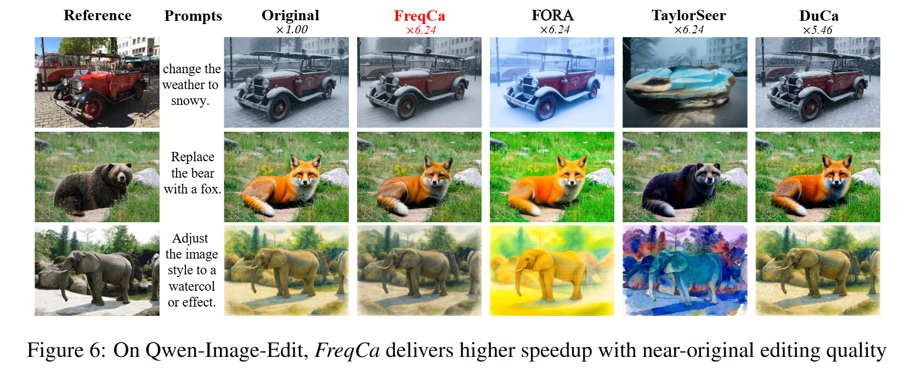 |
|---|---|
| 图 5：基于 GEdit 基准测试集（的实验结果）在 Qwen-Image-Edit上，FreqCa 的性能优于大多数基准方法。 | 图6：在Qwen-Image-Edit模型上，FreqCa在实现更高加速比的同时，编辑质量接近原始模型 |
4.4 消融实验
4.4.1 缓存内存与计算效率
传统逐层缓存方法会存储每层的注意力层和MLP层输出（N=2），并为m阶预测保留m+1个历史状态，因此内存开销为$K_{layer}=2(m+1)L$。对于FLUX.1-dev模型（L=57层），当采用二阶预测（m=2）时，需342个缓存单元。
相比之下，FreqCa仅缓存CRF，并采用频率解耦策略：低频成分复用（1个单元），高频成分采用二阶埃尔米特插值（3个单元），总内存开销固定，计算公式如下：
这一策略将内存复杂度从$O(L)$降至$O(1)$。在计算方面，预测步骤的开销可忽略不计（$C_{pred}\ll C_{full}$）。每S步执行一次完整前向传播，平均开销计算公式如下：
FreqCa实现了接近S倍的加速，且仅增加1%的内存开销，成为首个为扩散模型打造的“恒定内存、高吞吐量”推理加速框架。
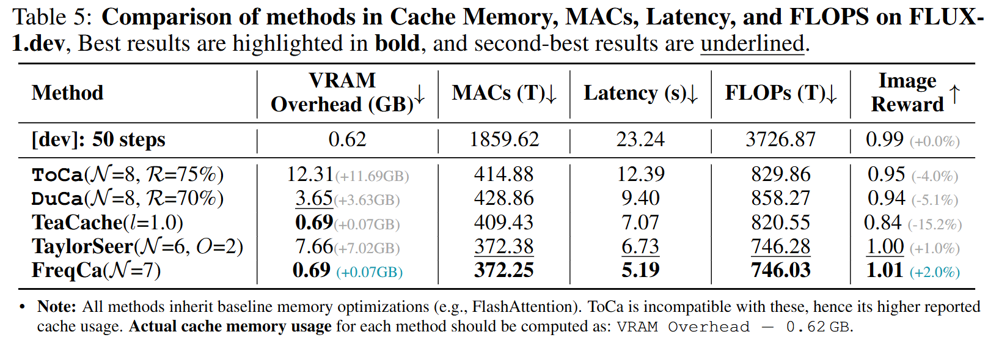 |
|---|
| 表5：FLUX.1-dev模型上各方法在缓存内存、乘加运算量（MACs）、延迟和浮点运算量（FLOPs）方面的对比。最佳结果以粗体标注，次佳结果以下划线标注。 |
注：所有方法均采用基准模型的内存优化技术（如FlashAttention）。ToCa与这些优化技术不兼容，因此其报告的缓存开销更高。各方法的实际缓存内存开销计算方式为：显存开销 - 0.62GB。
4.4.2 分解方法与预测阶数消融实验
我们在FLUX.1-dev模型上开展消融实验，以确定最优的频率分解方法与预测阶数。实验对比了三种分解策略（FFT、DCT以及无分解的基准方法），每种策略均搭配多种频率成分预测方式。图10对比了这些优化配置的结果，表明基于DCT的方法（尤其是低频复用+高频预测的组合）在不同加速比下均能保持较高的ImageReward得分，且在较大步长间隔（N>8）时优势显著。这种在高加速比下的稳健性，验证了我们选择该策略的合理性。在Qwen-Image模型上开展的独立消融实验显示，采用相同预测策略的FFT-based方法表现最佳。如图7所示，与最优配置相比，其他配置均会导致显著的质量下降。
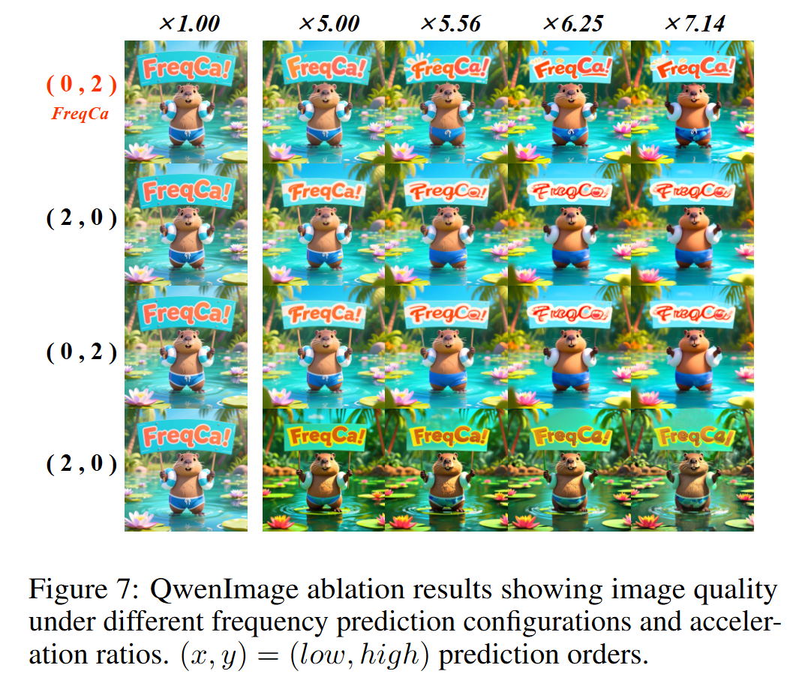 |
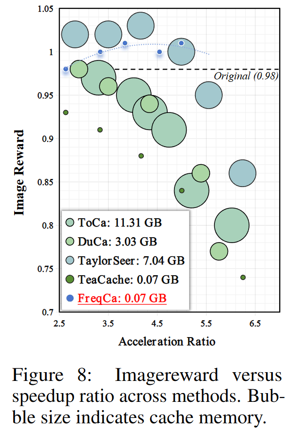 |
|---|---|
| 图 7：Qwen-Image 模型的消融实验结果，展示了不同频率预测配置与加速比下的图像质量。其中，(x,y)=(低频预测阶数，高频预测阶数) | 图 8：不同方法的 ImageReward 得分与加速比对比图。气泡大小代表缓存内存（占用量） |
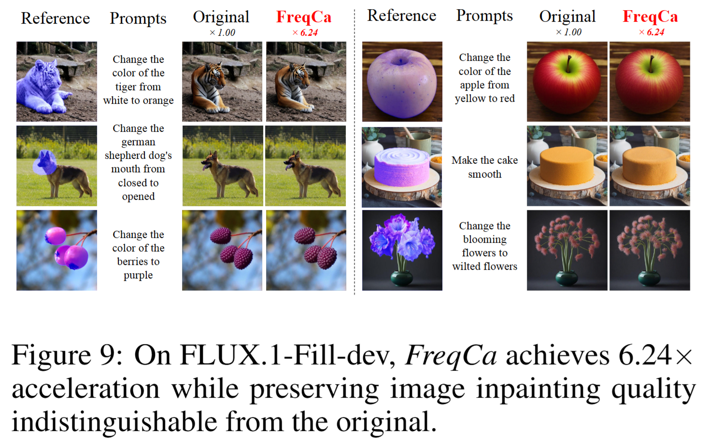 |
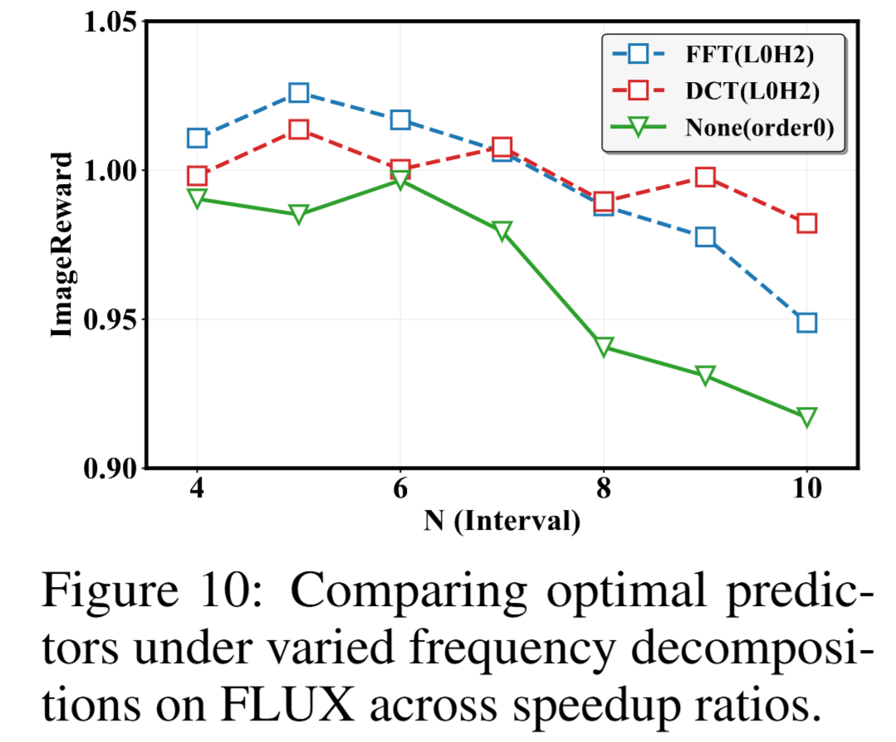 |
|---|---|
| 图 9：在 FLUX.1-Fill-dev（FLUX.1 图像修复开发版）模型上，FreqCa（频率感知缓存方法）实现了 6.24 倍的加速，同时所保留的图像修复质量与原始模型（未加速时）几乎无差异。 | 图 10：在 FLUX 模型上，不同加速比下各类频率分解方法对应的最优预测器对比图。 |
5 结论
在本研究中，我们提出了FreqCa——一种频率感知特征缓存框架，该框架融合了基于复用（reuse-based）与基于预测（forecast-based）两种范式的优势。通过将特征分解为低频成分与高频成分，FreqCa对稳定的低频特征进行选择性复用，并对动态变化的高频特征进行精准预测，最终在模型加速与生成质量之间实现了更优的权衡。此外，通过引入累积残差特征（Cumulative Residual Feature, CRF）缓存机制，我们将内存占用降至O(1)级别，使得频率感知缓存即便在消费级硬件上也具备实际应用可行性。在多种扩散模型上开展的大量实验表明，FreqCa能够实现6-7倍的加速，同时质量损失可忽略不计，为高效扩散模型推理树立了新的技术标杆（SOTA）。我们相信，FreqCa为可扩展、高性能的生成式建模开辟了新的可能，并为未来频率感知加速技术的研究提供了一种通用方法。
附录
A 大型语言模型的使用说明
本研究未使用任何大型语言模型（Large Language Models）。所有研究思路、算法设计、实验方法、数据分析及论文撰写工作均由作者独立完成。
B 详细实验设置
本节提供第4.1节中提及的所有实验配置的完整技术细节。
B.1 模型与任务说明
- FLUX.1-dev与Qwen-Image：FLUX.1-dev、FLUX.1-schnell（FLUX.1-dev的蒸馏版本）及Qwen-Image-Lightning（Qwen-Image的蒸馏版本）生成的图像分辨率为1024×1024，所使用的200条高质量提示词均源自DrawBench基准测试集；Qwen-Image生成的图像分辨率为1328×1328。图像质量评估采用ImageReward指标——该指标是衡量文本-图像对齐程度的稳健感知指标。
- FLUX.1-Kontext-dev与Qwen-Image-Edit：图像编辑合成任务采用FLUX.1-Kontext-dev与Qwen-Image-Edit模型。图像编辑操作及质量评估均基于GEdit基准测试集，该基准测试集以真实场景应用为核心构建，可对图像编辑模型进行更真实、全面的评估。
B.2 硬件与计算资源
所有实验均在企业级GPU硬件环境中开展，具体配置如下：
- FLUX.1-dev实验：采用NVIDIA A100 GPU
- FLUX.1-Kontext-dev实验：采用NVIDIA A100 GPU
- Qwen-Image实验：采用NVIDIA H20 GPU
- Qwen-Image-Edit实验：采用NVIDIA H20 GPU
B.3 FreqCa实现参数
- FLUX.1-dev实验：采用基于离散余弦变换（DCT）的频率分解方法
- FLUX.1-Kontext-dev实验：采用基于离散余弦变换（DCT）的频率分解方法
- Qwen-Image实验：采用基于快速傅里叶变换（FFT）的频率分解方法
- Qwen-Image-Edit实验：采用基于快速傅里叶变换（FFT）的频率分解方法
C 分解方法与预测阶数消融实验
如图C1所示，我们系统对比了经典频率分解方法（快速傅里叶变换FFT、离散余弦变换DCT）与无频率分解的基准方法。结果清晰表明，频率分解对稳定模型性能至关重要：不进行分解会导致ImageReward得分急剧下降，而FFT与DCT两种分解方法均能显著缓解这种性能退化，在各时间步保持稳定的生成质量。
此外，我们还探究了低频与高频成分不同预测阶数对模型性能的影响。实验发现，不当的预测策略易引入误差，损害生成质量。在所有测试配置中，“低频成分零阶预测（直接复用）+高频成分二阶预测”的组合始终表现最优，这验证了我们的核心假设——低频特征应直接复用，而高频成分则能从高阶预测建模中获益。这些发现不仅证实了频率感知设计的必要性，也为选择最优预测策略提供了实证依据。
C.1 预测阶数组合
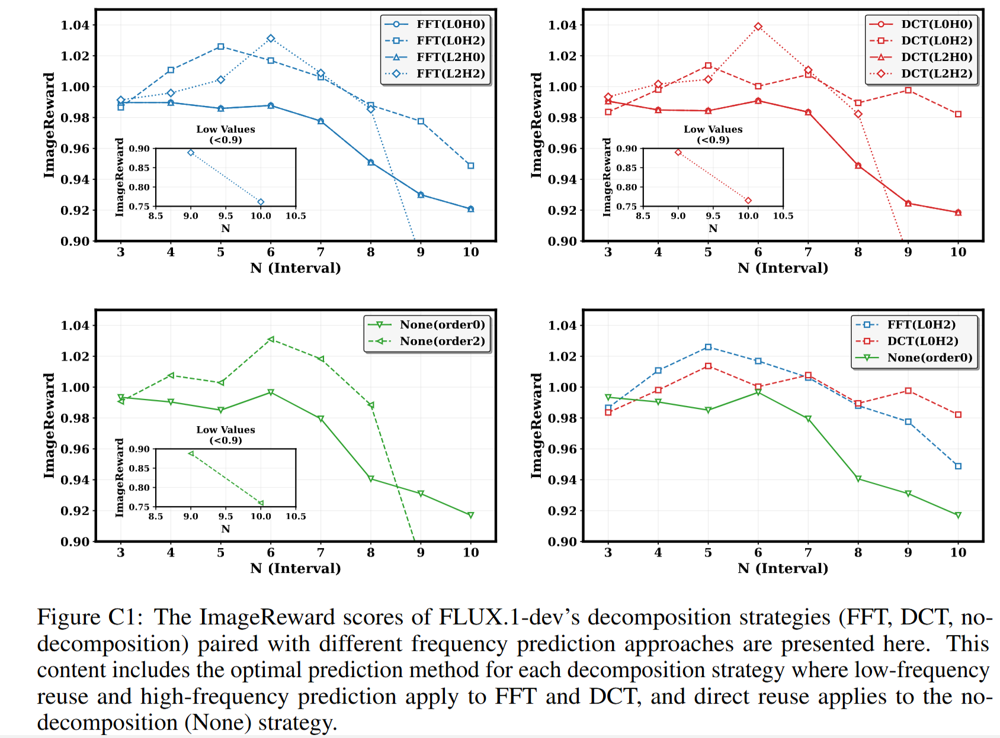 |
|---|
| 图 C1：此处展示了 FLUX.1-dev 模型在不同分解策略（快速傅里叶变换 FFT、离散余弦变换 DCT、无分解（None））与不同频率预测方式搭配下的 ImageReward 得分。本部分内容包含每种分解策略对应的最优预测方法：其中，快速傅里叶变换（FFT）与离散余弦变换（DCT）采用 “低频复用 + 高频预测” 的策略，而无分解（None）策略则采用直接复用的方式。 |
Review
Summary
本文提出了一种基于频率感知的缓存框架FreqCa，用于加速扩散模型的采样效率。FreqCa通过将缓存的特征分解为低频和高频分量，之后重用低频部分，并使用历史高频信息和 Hermite 插值器预测高频部分。此外，本文提出仅缓存累积残差特征（CRF），大大减少了内存开销。实验结果表明，在文本到图像生成和图像编辑的基准测试中，FreqCa 在速度和内存占用方面始终表现出强劲的竞争力。
Strengths
方法建立在良好的动机之上，图2展示了扩散模型采样过程中低频和高频分量的不同行为，证明了对低频和高频的差异化缓存策略的合理性与有效性。
FreqCa将差异化频率处理与内存高效CRF 缓存相结合，超越了之前的整体特征缓存方法。
实验结果充足，在不同模型和不同任务上进行了广泛的实验，充分证明了FreqCa的有效性。
Weaknesses
扩散模型采样过程中低频和高频分量的不同行为在之前的工作（FreeU）中已经被发现，虽然它是针对于UNet模型的研究。
文章写作缺少对使用方法的阐述，例如FFT和DCT具体是如何工作的，以及二阶Hermite插值器m阶差分$\Delta^{m}F(z_{t}^{High})$是如何求取的。
虽然实验结果表明 Hermite 插值效果良好，但缺乏误差界或收敛性理论分析以及与其他方法的对比。
Questions
图3(d)中为什么$\Delta^{1}F(z_{t}^{High})$与$\Delta^{2}F(z_{t}^{High})$要与$\Delta^{1}F(z_{t+N}^{High})$与$\Delta^{2}F(z_{t+N}^{High})$双向连接？两者是互相影响的吗？
为什么选择二阶埃尔米特插值器对易变的高频成分进行预测？有尝试使用不同的方法预测高频成分吗？效果与二阶埃尔米特插值器相比如何，有无具体对比结果？
对于FreeCa，它的极限加速倍数有多少？是否存在一个加速阈值，之后生成的图像质量急速下降？
对于FreeCa，会存在加速失效的特殊情况吗？如果有，是否可以说明加速失效的原因？